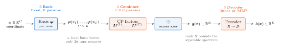
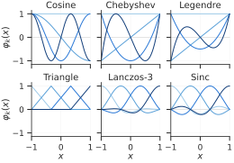
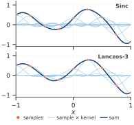
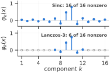

FUTON¶
FUTON, the Fourier Tensor Network, represents a signal as a truncated series in a fixed basis whose coefficient tensor is kept in low-rank form. This page derives the model, describes each stage as it is implemented, and explains how to size one.
From a series to a network¶
Take a signal \(s : [-1, 1]^C \to \mathbb{R}\) and a family of \(K\) functions \(\varphi_1, \dots, \varphi_K\) on \([-1, 1]\). Products of one function per axis form a separable basis of \([-1, 1]^C\), and the signal expands as
a generalized Fourier series whose coefficients form a tensor \(\mathcal{W} \in \mathbb{R}^{K \times \cdots \times K}\). Stored in full, the tensor has \(K^C\) entries: for a \(512 \times 768\) image at the sampling resolution that is the image itself, and for a \(256^3\) volume it is \(16.8\) million coefficients. FUTON's prior is that \(\mathcal{W}\) is compressible, and it stores the tensor in canonical polyadic (CP) form of rank \(R\),
with one factor matrix \(\boldsymbol{U}^{(c)} = [\boldsymbol{u}^{(c)}_1, \dots, \boldsymbol{u}^{(c)}_R] \in \mathbb{R}^{K \times R}\) per axis. Substituting the factorization into the series and exchanging the sums turns the \(C\)-fold summation into a product of \(C\) inner products:
where \(\boldsymbol{\varphi}(x_c) = [\varphi_1(x_c), \dots, \varphi_K(x_c)]\) and \(\odot\) is the elementwise product. Nothing in the forward pass is \(K^C\) any more: each axis is projected to \(R\) channels, the channels are multiplied across axes, and the \(R\) products are summed. With \(D\) output channels the final sum becomes a linear map \(\boldsymbol{V} \in \mathbb{R}^{D \times R}\); replacing it with a small MLP gives the model used in the experiments.
This is the three-stage pipeline decoder(combiner(basis(x))):

| Stage | Computes | Parameters | Keys |
|---|---|---|---|
| Basis | \(\boldsymbol{\varphi}(x_c)\) per axis | none | cosine, sinc, legendre, chebyshev, triangle, lanczos |
| Combiner | \(\boldsymbol{g}(\boldsymbol{x}) = \bigodot_c \boldsymbol{U}^{(c)\top} \boldsymbol{\varphi}(x_c)\) | \(R \sum_c K_c\) | cp, hadamard, tr |
| Decoder | \(\boldsymbol{V} \boldsymbol{g}(\boldsymbol{x}) + \boldsymbol{b}\), or an MLP | \(RD + D\); one hidden layer adds \(R^2 + R\) | linear, mlp |
A point costs \(O(R \sum_c K_c)\), linear in the spectral resolution and in the number of axes. A local basis (below) reduces the basis term to the \(2a\) nonzero taps per axis, \(O(aRC)\).
model = nf.FUTON(
in_features=3,
out_features=1,
basis=("sinc", {"num_components": 128, "grid_size": 256}),
combiner=("cp", {"rank": 218}),
decoder=("mlp", {"hidden_layers": 1}),
output_activation=torch.tanh,
)
Each stage accepts a registry key, a (key, kwargs) pair, a module class, or a module instance, resolved by nf.build_module. The basis is built as basis(in_features, **kwargs), the combiner as combiner(basis.num_components, **kwargs), and the decoder as decoder(combiner.out_features, out_features, **kwargs), so custom stages only need to expose num_components (a basis) or out_features (a combiner); see custom components.
Bases¶
Six one-dimensional families are implemented. All take num_components (an int for every axis or one count per axis), normalize and grid_size.

| Key | \(\varphi_k(x)\) | Orthogonal on \([-1, 1]\) | Support | Smoothness | Cardinal |
|---|---|---|---|---|---|
cosine |
\(\cos(k \pi u)\), \(u = (x + 1) / 2\), \(k = 0, \dots, K - 1\) | yes | global | \(C^\infty\) | no |
sinc |
\(\operatorname{sinc}\big((x - \mu_k) / w\big)\) | no | global | \(C^\infty\) | yes |
legendre |
\(P_k(x)\), Bonnet's recurrence | yes | global | \(C^\infty\) | no |
chebyshev |
\(T_k(x)\) | under the weight \((1 - x^2)^{-1/2}\) | global | \(C^\infty\) | no |
triangle |
\(\max(0, 1 - \lvert x - \mu_k \rvert / w)\) | no | 2 taps | \(C^0\) | yes |
lanczos |
\(\operatorname{sinc}(t) \operatorname{sinc}(t / a)\) for \(\lvert t \rvert < a\), \(t = (x - \mu_k) / w\) | no | \(2a\) taps | \(C^1\) | yes |
The kernel families are centred on the uniform grid \(\mu_k = -1 + k w\) with spacing \(w = 2 / (K - 1)\), so the grid of centres is the sampling grid of a signal with \(K\) samples per axis. A cardinal basis satisfies \(\varphi_k(\mu_j) = \delta_{jk}\): each function is one at its own centre and zero at all others, so the coefficients of an interpolant are the samples themselves. For sinc this is the Whittaker–Shannon interpolation formula, and Lanczos is its windowed, compactly supported version: with radius \(a\) (radius, default 2; the experiments use 3), a coordinate touches only the \(2a\) nearest centres.


Three options apply to every basis:
normalize(defaultTrue) L2-normalizes the feature vector \(\boldsymbol{\varphi}(x_c)\) at each point, not the basis functions. It stabilizes training and is what the experiments use.normalize=Falserecovers the plain series; for the cardinal bases it gives exact cardinal interpolation, and for the triangle basis with a CP combiner it recovers the TensoRF-CP parameterization (a linear map of the hat features equals sampling a 1D feature grid withalign_corners=True).grid_sizetabulates each axis onlinspace(-1, 1, size)at construction. Coordinates on that grid read the table and the others are evaluated directly, so a model trained on the pixel grid can still be queried between pixels. Table lookups carry no gradient with respect to \(x\); leavegrid_size=Nonewhen the loss differentiates through the coordinates. The local bases ignore it in sparse mode.sparse(triangleandlanczosonly, defaultTrue) returns each axis as anRCSMatrix, a row-contiguous sparse matrix that stores only the \(2a\) nonzero taps per point. The CP combiner contracts these directly, with one fusedrcs_productkernel on CUDA (Triton) that never forms the dense features and has a deterministic backward pass. Elsewhere the products use CSR in inference and a gather-and-contract path when gradients are needed. Sparse mode expects a flat batch(N, C);FUTON.forwardreshapes for you.
The paper proves that FUTON with the cosine basis is a universal approximator. In practice the choice of family barely moves accuracy on the grid, and moves training time a lot; the basis ablation measures both.
Combiners¶
| Key | Computes | Output width | Parameters |
|---|---|---|---|
cp |
\(\bigodot_c \boldsymbol{U}^{(c)\top} \boldsymbol{\varphi}(x_c)\) | rank |
\(R \sum_c K_c\) (bias=True adds \(CR\)) |
hadamard |
\(\bigodot_c \boldsymbol{\varphi}(x_c)\), all \(K_c\) equal | \(K\) | none |
tr |
\(\operatorname{vec}\big(\prod_c \mathcal{G}^{(c)} \times_2 \boldsymbol{\varphi}(x_c)\big)\) with cores \(\mathcal{G}^{(c)} \in \mathbb{R}^{r \times K_c \times r}\) | \(r^2\) | \(r^2 \sum_c K_c\) |
CPCombiner is the paper's model: linears[c].weight holds \(\boldsymbol{U}^{(c)\top}\), shape (rank, K_c), initialized Kaiming-uniform. HadamardCombiner is CP with \(\boldsymbol{U}^{(c)} = \boldsymbol{I}\), a diagonal coefficient tensor with no parameters of its own. TRCombiner chains tensor-ring cores into an \(r \times r\) matrix per point and flattens it, leaving the closure of the ring (a trace, or any linear map) to the decoder; a ring of rank \(r\) has the size of a CP combiner of rank \(r^2\). The combiner ablation finds CP both faster and more accurate at equal size.
Decoders¶
linearisnn.Linear(R, D): \(\hat{s}(\boldsymbol{x}) = \boldsymbol{V} \boldsymbol{g}(\boldsymbol{x}) + \boldsymbol{b}\). With it, FUTON is exactly a rank-\(R\) CP model of the signal in the chosen basis, Eq. (9) of the paper, and its capacity is the capacity of that tensor format.mlpisnf.MLP(R, D, hidden_layers=h), a ReLU network whose hidden width defaults to \(R\). The experiments use one hidden layer. The nonlinearity lets the model represent more than a rank-\(R\) tensor at the same size: on images it is worth about 5 dB over a linear decoder (decoder ablation).
output_activation is applied last; the benchmark models use torch.tanh to match targets in \([-1, 1]\). Inside a RadianceField, the density network must have no output activation, since the field applies its own.
Sizing a model¶
With a CP combiner and a one-hidden-layer MLP decoder of width \(R\), the parameter count is
The benchmark configurations, all chosen to match the parameter budget of the other models in their task:
| Task | num_components |
rank |
Decoder | Parameters |
|---|---|---|---|---|
| Images, \(512 \times 768\) Kodak | [H // 2, W // 2] |
224 | MLP, 1 hidden layer | 194,435 |
| Occupancy, \(256^3\) | 128 | 218 | MLP, 1 hidden layer | 131,673 |
| Radiance fields, density network with 16 outputs | 128 | 128 | MLP, 1 hidden layer | 67,728 (74,131 with the colour network) |
Two rules of thumb come out of the ablations. First, num_components is the bandwidth: half the sampling resolution per axis is enough for images, and \(K = 128\) for \(256^3\) volumes, because the MLP decoder recovers what a coarser basis loses. Second, at a fixed budget the rank matters more than extra components, so spend a larger budget on \(R\) before \(K\). The learning rate is 3e-2 for images and radiance fields and 1e-2 for volumes.
Relation to the paper¶
The cosine basis, CP combiner and linear decoder implement Eq. (9) of the paper: combiner.linears[c].weight stores \(\boldsymbol{U}^{(c)\top}\) and decoder.weight stores \(\boldsymbol{V}\). Coordinates are mapped internally from \([-1, 1]\) to \([0, 1]\). The implementation drops the paper's \(\sqrt{2}\) factor on the cosines and normalizes the feature vectors by default; normalize=False recovers Eq. (1) up to per-frequency constants that the factors absorb. The other bases, the Hadamard and tensor-ring combiners and the MLP decoder are extensions, and the experiments of the paper use the sinc and Lanczos bases with the MLP decoder and torch.tanh at the output.